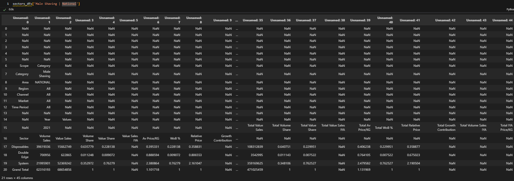
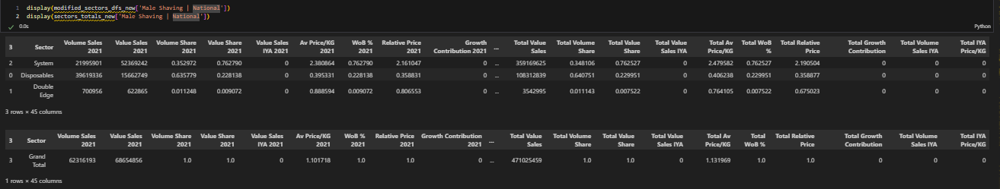
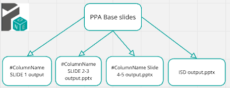

In the slide automation landscape: from13 slide base we create 5 decks

Landscape Market(trend-Concent-growth)&ValAvgPrice Slides:
Landscape ShareGrowth Slides:
Landscape Category(Trend-Overview)Slides :
Landscape Output WO CB Slides:
Landscape RPVM Slides:
# Import necessary module for working with PowerPoint presentations
from pptx import Presentation
# Import the win32com.client module, aliasing it as win32 for convenience
import win32com.client as win32
# Import pandas for data manipulation and analysis
import pandas as pd
# Import numpy for numerical computing
import numpy as np
# Import the Path class from pathlib for working with filesystem paths
from pathlib import Path
# Import re for regular expression operations
import re
# Import sys for access to interpreter-related functions
import sys
# Import time for various time-related functions
import time
# Assign win32.constants to a shorter alias win32c for easier access
win32c = win32.constants
# Import shutil for high-level file operations
import shutil
# Import os for operating system dependent functionality
import os
# Import win32com.client again for COM object and functions access
import win32com.client
# Import warnings for warning control functionality
import warnings
def secsegclean(inputdic):
outputdic={}
totaloutputdic={}
for s in inputdic.keys():
t = inputdic[s].copy()
t=DetectHeader(t).fillna(0)
mod = t[(~t[t.columns[0]].astype(str).str.contains('Grand Total'))]
mod = mod.sort_values([col for col in mod.columns if 'Value Share' in col], ascending=False)
tot = t[(t[t.columns[0]].astype(str).str.contains('Grand Total'))]
if not mod.empty:
outputdic[s] = mod
if not tot.empty:
totaloutputdic[s] = tot
return outputdic,totaloutputdic


To create slides we need some function Example:Market Trends slides 
Totals_Table_Fill: function populates a table on a slide with totals data from a specified dataframe. It formats the text in the cells, including font size, font name, and alignment.
def Totals_Table_Fill(table, list_duplicates, df_totals, cols, slidenum):
for i, row in enumerate(table.rows):
if i != 0:
for j, cell in enumerate(row.cells):
cell.text = str(round(df_totals[list_duplicates[slidenum]][cols].iloc[0, 1:4][j] / 1000000, 1 ))
cell.text_frame.paragraphs[0].runs[0].font.size = Pt(10)
cell.text_frame.paragraphs[0].runs[0].font.name = 'Nexa Book'
cell.text_frame.paragraphs[0].alignment = PP_ALIGN.CENTER
return table
def Column_Chart_Fill(chart, scope):
client_colors = [RGBColor(0, 80, 75), RGBColor(0, 108, 109), RGBColor(0, 160, 151), RGBColor(126, 202, 196), RGBColor(153, 199, 197), RGBColor(178, 223, 220)]
gray_colors = [RGBColor(217, 217, 217), RGBColor(191, 191, 191), RGBColor(166, 166, 166), RGBColor(155, 152, 152), RGBColor(127, 127, 127)]
for i, series in enumerate(chart.series):
if series.name in scope:
series.format.fill.solid()
series.format.fill.fore_color.rgb = client_colors[i if i < len(client_colors) else -1]
else:
series.format.fill.solid()
series.format.fill.fore_color.rgb = gray_colors[i if i < len(gray_colors) else -1]
for j, point in enumerate(series.points):
data_label = point.data_label
data_label.has_text_frame = True
data_label.text_frame.text = str(round(series.values[j], 1))
data_label.text_frame.paragraphs[0].runs[0].font.color.rgb = RGBColor(255, 255, 255)
Markete_Trends function, which automates the creation and updating of market trend analysis slides in a PowerPoint presentation. It fills the slides with charts and tables using data from provided dataframes. The function processes each slide based on a list of duplicate names, adding relevant data and formatting to charts and tables. It supports customization through parameters like position offset and slide grouping criteria. This function is useful for generating detailed, data-driven presentations on market trends, enhancing efficiency and consistency in reporting.
def Market_Trends(prs, list_duplicates, modified_df, df_totals, scope, position=0, slide_by=''):
for slidenum in range(len(list_duplicates)):
shapes = prs.slides[slidenum + position].shapes
charts = []
tables = []
title = shapes.title.text
shapes[4].text = data_source
shapes[5].text = f'Market Trends Analysis | By {slide_by} | ' + list_duplicates[slidenum] + ' | Year over Year'
shapes[5].text_frame.paragraphs[0].font.bold = True
for shape in shapes:
if shape.has_chart:
charts.append(shape)
if shape.has_table:
tables.append(shape)
for chartnum in range(2):
chart = charts[chartnum].chart
table = tables[chartnum].table
chart_data = CategoryChartData()
chart_data.categories = ['2021', '2022', 'YTD 2023']
volume_cols = [c for c in modified_df[list_duplicates[slidenum]].columns[modified_df[list_duplicates[slidenum]].columns.str.contains(f'{slide_by}|Volume Sales')]]
value_cols = [c for c in modified_df[list_duplicates[slidenum]].columns[(modified_df[list_duplicates[slidenum]].columns.str.contains(f'{slide_by}|Value Sales')) & ~(modified_df[list_duplicates[slidenum]].columns.str.contains('IYA'))]]
if chartnum == 0:
for i in range(modified_df[list_duplicates[slidenum]].shape[0]):
series_name = modified_df[list_duplicates[slidenum]][volume_cols].iloc[i, 0]
number = modified_df[list_duplicates[slidenum]][volume_cols].iloc[i, 1:4] / 1000000
series = chart_data.add_series(series_name, number)
chart.replace_data(chart_data)
Column_Chart_Fill(chart, scope)
Totals_Table_Fill(table, list_duplicates, df_totals, volume_cols, slidenum)
elif chartnum == 1:
value_cols = [c for c in modified_df[list_duplicates[slidenum]].columns[(modified_df[list_duplicates[slidenum]].columns.str.contains(f'{slide_by}|Value Sales')) & ~(modified_df[list_duplicates[slidenum]].columns.str.contains('IYA'))]]
for i in range(modified_df[list_duplicates[slidenum]].shape[0]):
series_name = modified_df[list_duplicates[slidenum]][value_cols].iloc[i, 0]
number = modified_df[list_duplicates[slidenum]][value_cols].iloc[i, 1:4] / 1000000
series = chart_data.add_series(series_name, number)
chart.replace_data(chart_data)
Column_Chart_Fill(chart, scope)
Totals_Table_Fill(table, list_duplicates, df_totals, value_cols, slidenum)
# This script prepares index and duplication lists for generating PowerPoint slides
# with various market trends and growth analysis. It dynamically adjusts based on the presence
# of segment data and compiles a list of section names for slide titles.
# Generate index list based on the presence of segments and section numbers
index = [
*[0] * (4 if segments else 3), # Index for manufacturer and brand slides
*[1] * (4 if segments else 3), # Index for sector slides
*[2] * (2 if segments else 1), # Index for segment slides
*[2] * section_number, # Index for additional sections
*[3] * (2 if segments else 1), # Index for additional segment slides
*[3] * section_number, # Index for additional sections
4, # Index for specific slide
*sectorIndex * 2, # Index for sector details
*segmentIndex * 2, # Index for segment details
8, 9, 10 # Fixed indices for specific slides
]
# Generate duplication list based on the presence of segments and data keys
duplication = [
len(modified_manuf_dfs_new.keys()), # Number of manufacturer data keys
len(modified_brands_share_new.keys()), # Number of brand share data keys
len(modified_sectors_dfs_new.keys()), # Number of sector data keys
len(modified_segment_dfs_new.keys()) if segments else 0, # Number of segment data keys if segments exist
len(modified_manuf_dfs_new.keys()), # Repeated for next section
len(modified_brands_share_new.keys()), # Repeated for next section
len(modified_sectors_dfs_new.keys()), # Repeated for next section
len(modified_segment_dfs_new.keys()) if segments else 0, # Repeated for next section if segments exist
len(modified_sectors_P12M_new.keys()), # Number of sectors data keys for P12M
len(modified_segment_P12M_new.keys()) if segments else 0, # Number of segments data keys for P12M if segments exist
*duplication_num, # Additional duplication numbers
len(modified_sectors_clients_new.keys()), # Number of sector client data keys
len(modified_segment_clients_new.keys()) if segments else 0, # Number of segment client data keys if segments exist
*duplication_num_Avg, # Additional average duplication numbers
len(modified_manuf_P12M_new.keys()), # Number of manufacturer data keys for P12M
len(sharGrowthDf_sec.keys()), # Number of sector share growth data keys
len(sharGrowthDf_sec.keys()), # Repeated for next section
len(sharGrowthDf_seg.keys()) if segments else 0, # Number of segment share growth data keys if segments exist
len(sharGrowthDf_seg.keys()) if segments else 0, # Repeated if segments exist
len(modified_calendar_new.keys()), # Number of calendar data keys
len(modified_brands_evolution_sorted_new.keys()), # Number of sorted brand evolution data keys
len(categories_overview_dfs_new.keys()) # Number of category overview data keys
]
# Remove zeros from duplication list
duplication = [item for item in duplication if item != 0]
# Define section names for each slide group
section_names_slide1 = ["Market Trends by Manufacturer", "Market Trends by Brands", "Market Trends by Sectors"] + (["Market Trends by Segments"] if len(segments) > 0 else [])
section_names_slide2 = ["Market Concentraion By Manufacturer", "Market Concentration By Brands", "Market Concentration By Sectors"] + (["Market Concentration By Segments"] if len(segments) > 0 else [])
section_names_slide3 = ["Market Growth By Sectors"] + (["Market Growth By Segments"] if len(segments) > 0 else []) + [*section_name_Growth]
section_names_slide4 = ["Value Vs AvgPrice By Sectors"] + (["Value Vs AvgPrice By Segments"] if len(segments) > 0 else []) + [*section_name_Avg]
section_names_slide5 = ['Share and Growth By Manufacturer/Brands']
section_names_slide6 = ['Share And Growth By Manufacturer By Sector', 'Share And Growth By Brands By Sector'] + (['Share And Growth By Manufacturer By Segment', 'Share And Growth By Brands By Segment'] if len(segments) > 0 else [])
section_names_slide7 = ["Category Trends"]
section_names_slide8 = ['Share Evolution By Brand']
section_names_slide9 = ["Category Overview"]
# Combine all section names into a single list
section_names = [
*section_names_slide1, *section_names_slide2, *section_names_slide3,
*section_names_slide4, *section_names_slide5, *section_names_slide6,
*section_names_slide7, *section_names_slide8, *section_names_slide9
]
# calls the Market_Trends function to generate PowerPoint slides
# for different categories (Top Companies, Top Brands, Sector, Segment) and
# updates the position variable for each call to ensure slides are generated in the correct order.
p=0
Market_Trends(prs, list(modified_manuf_dfs_new.keys()), modified_manuf_dfs_new, modified_manuf_totals_new, client_manuf ,position = calculate_position(p), slide_by = 'Top Companies')
p+=1
Market_Trends(prs, list(modified_brands_share_new.keys()), modified_brands_share_new, modified_brands_totals_new, client_brands ,position =calculate_position(p), slide_by = 'Top Brands')
p+=1
Market_Trends(prs, list(modified_sectors_dfs_new.keys()), modified_sectors_dfs_new, sectors_totals_new, sectors ,position = calculate_position(p), slide_by = 'Sector')
p+=1
if len(segments)!=0:
Market_Trends(prs, list(modified_segment_dfs_new.keys()), modified_segment_dfs_new, segment_totals_new, segments ,position = calculate_position(p), slide_by = 'Segment')
p+=1
# This script saves the generated PowerPoint presentation to a specified path
# and then opens the saved presentation using the PowerPoint application.
# Define the output path for the PowerPoint presentation
outputPath = os.getcwd() + "\\Landscape output.pptx"
# Save the PowerPoint presentation to the specified output path
prs.save(outputPath)
# Initialize the PowerPoint application using win32com client
app = win32.Dispatch("PowerPoint.Application")
# Open the saved PowerPoint presentation
presentation = app.Presentations.Open(outputPath)

In the slide automation pricing : from12 slide base we create 5 decks

Pricing Output Slides:
Pricing Avg&Shelf Price Output Slides:
Pricing Price Point Output Slides :
Pricing Correlation Output Slides:
Pricing not_forcing_CB_Output Slides
# Import necessary module for working with PowerPoint presentations
from pptx import Presentation
# Import the win32com.client module, aliasing it as win32 for convenience
import win32com.client as win32
# Import pandas for data manipulation and analysis
import pandas as pd
# Import numpy for numerical computing
import numpy as np
# Import the Path class from pathlib for working with filesystem paths
from pathlib import Path
# Import re for regular expression operations
import re
# Import sys for access to interpreter-related functions
import sys
# Import time for various time-related functions
import time
# Assign win32.constants to a shorter alias win32c for easier access
win32c = win32.constants
# Import shutil for high-level file operations
import shutil
# Import os for operating system dependent functionality
import os
# Import win32com.client again for COM object and functions access
import win32com.client
# Import warnings for warning control functionality
import warnings

# Iterate over each key in the dictionary 'modified_price_positioning_sorted'
for k in modified_price_positioning_sorted.keys():
# Create a copy of the DataFrame associated with the current key to avoid modifying the original data
df = modified_price_positioning_sorted[k].copy()
# Filter out rows where the 'Top Brands' column has the value 'Others'
df = df[df['Top Brands'] != 'Others']
# Replace all NaN values in the DataFrame with 0
df = df.replace(np.nan, 0)
# Update the dictionary with the modified DataFrame
modified_price_positioning_sorted[k] = df


def pricePositioning(prs,modified_price_positioning_sorted,numOfDuplicates,position=0):
for slidenum in range(numOfDuplicates):
# Extract market and corresponding dataframe
market=list(modified_price_positioning_sorted.keys())[slidenum]
df=modified_price_positioning_sorted[market].reset_index(drop=True)
# Access shapes in the slide
shapes = prs.slides[slidenum+position].shapes
charts = []
tables = []
title = shapes.title.text
# Update text boxes in the slide
shapes[4].text = data_source
shapes[5].text = 'Brand Price & Index vs Market | Bubble Size by Value Sales | '+market+' | P12M'
shapes[5].text_frame.paragraphs[0].font.bold = True
for shape in shapes:
if shape.has_chart:
shape_id = shape.shape_id
charts.append(shape)
chart = charts[0].chart
charts[0].left = Inches(0.57) # Adjust left position
chart_name = charts[0].name
chart_type = chart.chart_type
# Add bubble chart data
chart_data = BubbleChartData()
chart_data.categories = df['Av Price/Unit'].unique().tolist()
series = chart_data.add_series("Relative Price Index")
series.has_data_labels = True
# Add data points to the bubble chart
for i in range(df.shape[0]):
series.add_data_point(df['Av Price/Unit'].iloc[i], df['Relative Price'].iloc[i], df['Value Sales'].iloc[i])
chart.replace_data(chart_data)
# Update chart formatting
xlsx_file=BytesIO()
with chart_data._workbook_writer._open_worksheet(xlsx_file) as (workbook, worksheet):
chart_data._workbook_writer._populate_worksheet(workbook, worksheet)
worksheet.write(0, 4, "labels")
worksheet.write_column(1, 4, df['Top Brands'], None)
chart._workbook.update_from_xlsx_blob(xlsx_file.getvalue())
category_axis = chart.category_axis
if sign == 'Before':
category_axis.tick_labels.number_format = f'{currency}#,##0.00' if decimals == 2 else f'{currency}#,##0'
else:
category_axis.tick_labels.number_format = f'#,##0.00{currency}' if decimals == 2 else f'#,##0{currency}'
category_axis.auto_axis = True
value_axis = chart.value_axis
value_axis.tick_labels.number_format = '0%'
value_axis.auto_axis = True
# Customize data labels for each point in the chart
for i,point in enumerate(chart.series[0].points):
if df['Top Brands'].iloc[i]=="Others":
point.format.fill.background()
point.data_label.text_frame.text=''
point.format.line.width = Pt(0)
else:
data_label = point.data_label
data_label.has_text_frame=True
data_label.text_frame.text=df['Top Brands'].iloc[i]
data_label.text_frame.paragraphs[0].runs[0].font.size = Pt(10)
data_label.position = XL_LABEL_POSITION.CENTER
point.format.fill.solid()
point.format.fill.fore_color.rgb = RGBColor(245,245,245)
point.format.line.color.rgb = RGBColor(207,206,206) # Set the desired RGB color value
point.format.line.width = Pt(1)
This code is preparing data and configurations for generating a PowerPoint presentation with multiple sections, each requiring a different number of slides based on various price and distribution analyses. It includes:
# Define the index list for slide positions
index = [0, 1, 2, 3, 4, 3, 4, 5, 5, 5, 5, 5, 5, 6, 7, 7]
# Define the duplication list representing the number of slides to be generated for each section
duplication = [
len(modified_price_positioning_sorted.keys()), # Number of price positioning slides
len(modified_brands_segments_leadership.keys()), # Number of segments leadership slides
len(modified_brands_sector_leadership.keys()), # Number of sectors leadership slides
len(all_brands_sector.keys()), # Number of sector avg price/vol comparison slides
len(all_brands_sector.keys()), # Number of sector shelf price/vol comparison slides
len(all_brands_segment.keys()), # Number of segment avg price/vol comparison slides
len(all_brands_segment.keys()), # Number of segment shelf price/vol comparison slides
len(sectorP3mPD.keys()), # Number of category price point distribution analysis P3M slides
len(sectorP12mPD.keys()), # Number of category price point distribution analysis P12M slides
len(segmentP3mPD.keys()), # Number of sector price point distribution analysis P3M slides
len(segmentP12mPD.keys()), # Number of sector price point distribution analysis P12M slides
len(sub_segmentP3mPD.keys()), # Number of segment price point distribution analysis P3M slides
len(sub_segmentP12mPD.keys()), # Number of segment price point distribution analysis P12M slides
len(modified_brandPriceDistribution.keys()), # Number of price point distribution analysis by brand slides
len(modified_sectorsPriceDistribution.keys()), # Number of price point distribution by brand by sector slides
len(modified_segmentPriceDistribution.keys()) # Number of price point distribution by brand by segment slides
]
# Define the section names to be used in the presentation
section_names = [
"Price Positioning Analysis",
"Segments Leadership Analysis",
"Sectors Leadership Analysis",
"Sector Avg Price/Vol Comparison",
"Sector Shelf Price/Vol Comparison",
"Segment Avg Price/Vol Comparison",
"Segment Shelf Price/Vol Comparison",
"Category Price Point Distribution Analysis P3M",
"Category Price Point Distribution Analysis P12M",
"Sector Price Point Distribution Analysis P3M",
"Sector Price Point Distribution Analysis P12M",
"Segment Price Point Distribution Analysis P3M",
"Segment Price Point Distribution Analysis P12M",
"Price Point Distribution Analysis By Brand",
"Price Point Distribution By Brand By Sector",
"Price Point Distribution By Brand By Segment"
]
# Define paths for the base PowerPoint template and the new duplicated presentation
path = os.getcwd() + '\Pricing slide base.pptx'
new_pre = os.getcwd() + '\Pricing duplicated.pptx'
# Set the initial position for slide insertion to 0
position = 0
# Call the pricePositioning function to generate slides for price positioning analysis
pricePositioning(prs, modified_price_positioning_sorted, duplication[0], position)
# Define the output path for the new PowerPoint presentation
outputPath = os.getcwd() + "\\Pricing output.pptx"
# Save the modified presentation to the specified output path
prs.save(outputPath)
# Open the saved PowerPoint presentation using the PowerPoint application
app = win32.Dispatch("PowerPoint.Application")
presentation = app.Presentations.Open(outputPath)

In the slide automation PPA: from 5 slide base we create 4 decks  ColumnName= ['Size Bracket']#Run per bracket
#ColumnName SLIDE 1output Slides:
#ColumnName SLIDE 2-3output Slides:
#ColumnName Slide4-5 output Slides:
ISD output Slides :
# Import necessary module for working with PowerPoint presentations
from pptx import Presentation
# Import the win32com.client module, aliasing it as win32 for convenience
import win32com.client as win32
# Import pandas for data manipulation and analysis
import pandas as pd
# Import numpy for numerical computing
import numpy as np
# Import the Path class from pathlib for working with filesystem paths
from pathlib import Path
# Import re for regular expression operations
import re
# Import sys for access to interpreter-related functions
import sys
# Import time for various time-related functions
import time
# Assign win32.constants to a shorter alias win32c for easier access
win32c = win32.constants
# Import shutil for high-level file operations
import shutil
# Import os for operating system dependent functionality
import os
# Import win32com.client again for COM object and functions access
import win32com.client
# Import warnings for warning control functionality
import warnings

# Assign the appropriate DataFrame based on the value of columnName
ppaDf = share_topline_base_price_bracket if columnName == "Base Price Bracket" else share_topline_size_bracket
# The variable 'brackets' is used but not defined in this snippet; it should be defined beforehand.
# Iterate over the elements in 'brackets'
for i in brackets:
# Create a formatted string based on the elements of 'brackets', replacing special characters and converting to lowercase
f"share_topline_{i.split('.[')[1]}".replace("]", "").replace(" ","_").lower()
# Initialize dictionaries to store processed DataFrames
ToplineBracket = {}
ToplineBracketTotal = {}
# Iterate over the keys in ppaDf
for key in ppaDf.keys():
df = ppaDf[key].copy() # Create a copy of the DataFrame to avoid modifying the original
df.columns = df.iloc[12].str.replace('\xa0',' ') # Rename columns by replacing non-breaking spaces with regular spaces
df = df.iloc[13:-1] # Remove the first 13 rows and the last row
df[columnName] = df[columnName].ffill() # Forward-fill missing values in the specified column
# df_tot = df[df['Size Bracket'].str.contains("Total")] # (Optional) Filter rows that contain "Total" in 'Size Bracket'
# df_brands = df[~df["Size Bracket"].isin(df_tot['Size Bracket'])] # (Optional) Exclude rows that match 'df_tot'
df[["Value Share", "Brand WoB %", "Value Sales IYA", "Relative Price"]] = df[["Value Share", "Brand WoB %", "Value Sales IYA", "Relative Price"]].replace(np.nan, 0).astype(float) # Replace NaN values with 0 and convert to float
df = df.sort_values('Value Share', ascending=False) # Sort the DataFrame by 'Value Share' in descending order
# Check if the DataFrame is empty and print the key if it is
if df.shape[0] == 0:
print(key)
else:
# ToplineBracketTotal[key] = df_tot # (Optional) Store the 'Total' filtered DataFrame
ToplineBracket[key] = df # Store the processed DataFrame in the dictionary
# Extract unique values from the processed DataFrames, removing ' Total' and collecting them into a list
bracketsValue = list(set([value.replace(' Total','') for val in ToplineBracket.values() for value in val[columnName].unique() if 'Total' in value]))


def brandShareTopline(prs, modifiedShareToplineBracket, bracketsValue, numOfDuplicates, slide_by, clientElement, position=0):
for slidenum in range(numOfDuplicates):
# Get the market name and its corresponding data frame
market = list(modifiedShareToplineBracket.keys())[slidenum]
df = modifiedShareToplineBracket[market].copy()
# Extract and sort 'Size' from the slide_by column
df['Size'] = df[f"{slide_by}"].apply(lambda x: x.split('-')[1].split(' ')[0] if '-' in x else 9999).astype(float)
df = df.sort_values(by=['Size'], ascending=False)
# Filter total brand data and clean up column values
dfTotalBrand = df[df[f"{slide_by}"].str.contains('Total')]
dfTotalBrand[f"{slide_by}"] = dfTotalBrand[f"{slide_by}"].str.replace(' Total', '')
dfTotalBrand = dfTotalBrand[dfTotalBrand['Value Share'] > .01]
# Filter the main data frame based on size
df = df[df['Size'].isin(dfTotalBrand['Size'].unique())].sort_values(by='Value Share', ascending=False)
# Get the top 3 brands excluding the client element
dfTopSales = df[(df['Top Brands'].notna()) & (df['Top Brands'] != clientElement)].drop_duplicates(subset='Top Brands')['Top Brands'].iloc[:3].to_list()
dfBrandInScope = df[df['Top Brands'].isin(dfTopSales)]
# Calculate the 'Other' category for the data frame
dfOther = df[(~df['Top Brands'].isin(dfTopSales + [clientElement])) & (~df[f"{slide_by}"].str.contains('Total'))].groupby([f"{slide_by}", 'Size'])['Value Share'].sum().reset_index().sort_values(by='Size', ascending=False)
missingOtherBracket = list(set(bracketsValue) - set(dfTotalBrand[f"{slide_by}"].unique()))
missingOtherBracket = pd.DataFrame({f"{slide_by}": missingOtherBracket, 'Size': [float(x.split('-')[1].split(' ')[0]) if '-' in x else 9999 for x in missingOtherBracket]})
dfOther = pd.concat([dfOther, missingOtherBracket]).sort_values(by='Size', ascending=False)
dfTotalBrand = pd.concat([dfTotalBrand, missingOtherBracket]).sort_values(by='Size', ascending=False)
# Filter the client's brand data
dfClientBrand = df[df['Top Brands'] == clientElement]
# Access slide shapes to update text and formatting
shapes = prs.slides[slidenum + position].shapes
shapes[4].text = data_source
shapes[5].text = f'Brand Share Topline By {slide_by} | {market} | P12M'
# Format text as bold and set font size
shapes[5].text_frame.paragraphs[0].font.bold = True
for p in range(len(shapes[5].text_frame.paragraphs)):
shapes[5].text_frame.paragraphs[p].font.size = Pt(12)
shapes[6].text_frame.paragraphs[0].runs[0].text = shapes[6].text_frame.paragraphs[0].runs[0].text.replace('Size Bracket', slide_by)
shapes[6].text_frame.paragraphs[0].font.size = Pt(16)
# Create tables and charts
tables, charts = createTableAndChart(shapes)
# Adjust table row numbers
table = tables[0].table
num_rows_to_remove = len(table.rows) - dfTotalBrand[f"{slide_by}"].nunique() - 1
for _ in range(num_rows_to_remove):
if len(table.rows) > 1: # Skip removing the first row if there is more than one row
row = table.rows[1]
remove_row(table, row)
# Set table row height
table_height = Inches(3.81) # Specify the desired table height
total_row_height = table_height - table.rows[0].height
num_rows = len(table.rows) - 1 # Exclude the first row
if num_rows > 0:
cell_height = total_row_height / num_rows
for row in range(1, len(table.rows)):
table.rows[row].height = int(cell_height)
# Replace the table data
for i, row in enumerate(table.rows):
for j, cell in enumerate(row.cells):
if i == 0:
# Update header cells
if j in [2, 3, 4]:
cell.text = cell.text.replace('Brand', clientElement)
for paragraph in cell.text_frame.paragraphs:
paragraph.font.name = 'Nexa Bold'
paragraph.font.size = Pt(9)
paragraph.alignment = PP_ALIGN.CENTER
paragraph.font.color.rgb = RGBColor(87, 85, 85)
paragraph.font.bold = False
continue
# Update data cells
sizeBracket = dfTotalBrand[f"{slide_by}"].unique()[i - 1]
if j == 0:
cell.text = sizeBracket
cell.text_frame.paragraphs[0].font.name = 'Nexa Bold'
cell.text_frame.paragraphs[0].font.size = Pt(9)
cell.text_frame.paragraphs[0].alignment = PP_ALIGN.CENTER
if j == 3 or j == 4:
if j == 3:
value = dfClientBrand[dfClientBrand[f"{slide_by}"] == sizeBracket]['Value Sales IYA'].unique()
# Exclude Brand 'Brand WoB %' < 5%
if value and dfClientBrand[dfClientBrand[f"{slide_by}"] == sizeBracket]['Brand WoB %'].unique()[0] < .0005:
value = [0]
cell.text = '' if (len(value) == 0) or (int(round(float(value[0]) * 100, 0)) == 0) else (str(int(round(float(value[0]) * 100, 0))) + '%' if int(round(float(value[0]) * 100, 0)) <= 1000 else 'Large')
else:
value = dfClientBrand[dfClientBrand[f"{slide_by}"] == sizeBracket]['Relative Price'].unique()
# Exclude Brand 'Brand WoB %' < 5%
if value and dfClientBrand[dfClientBrand[f"{slide_by}"] == sizeBracket]['Brand WoB %'].unique()[0] < .0005:
value = [0]
cell.text = '' if len(value) == 0 or (int(round(float(value[0]) * 100, 0)) == 0) else str(int(round(float(value[0]) * 100, 0))) + '%'
cell.text_frame.paragraphs[0].font.name = 'Nexa Book'
cell.text_frame.paragraphs[0].font.size = Pt(8)
cell.text_frame.paragraphs[0].alignment = PP_ALIGN.CENTER
# Update chart data
for chartNum in [0, 1]:
chart = charts[chartNum].chart
chart_data = CategoryChartData()
chart_data.categories = ['']
if chartNum == 0:
missingBrandBracket = list(set(dfTotalBrand[f"{slide_by}"].unique()) - set(dfClientBrand[f"{slide_by}"].unique()))
missingBrandBracket = pd.DataFrame({'Top Brands': clientElement, f"{slide_by}": missingBrandBracket, 'Size': [float(x.split('-')[1].split(' ')[0]) if '-' in x else 9999 for x in missingBrandBracket]})
dfClientBrand2 = pd.concat([dfClientBrand, missingBrandBracket]).sort_values(by='Size', ascending=False).replace(np.nan, None)
# Exclude Value Share less than 5%
dfClientBrand2['Brand WoB %'] = np.where(dfClientBrand2['Brand WoB %'] < .0005, None, dfClientBrand2['Brand WoB %'])
brandWob = dfClientBrand2['Brand WoB %'].to_list()
chart_data.add_series('Brand WoB %', brandWob)
else:
valueShare = dfTotalBrand['Value Share'].replace(np.nan, None).to_list()
chart_data.add_series('Value Share', valueShare)
chart.replace_data(chart_data)
# Update the comparison chart
chart2 = charts[2].chart
chart_data2 = CategoryChartData()
chart_data2.categories = dfTotalBrand[f"{slide_by}"].unique()
missingBrandBracket = list(set(dfTotalBrand[f"{slide_by}"].unique()) - set(dfClientBrand[dfClientBrand['Top Brands'] == clientElement][f"{slide_by}"].unique()))
missingBrandBracket = pd.DataFrame({'Top Brands': clientElement, f"{slide_by}": missingBrandBracket, 'Size': [float(x.split('-')[1].split(' ')[0]) if '-' in x else 9999 for x in missingBrandBracket]})
dfClientBrand2 = pd.concat([dfClientBrand[dfClientBrand['Top Brands'] == clientElement], missingBrandBracket]).sort_values(by='Size', ascending=False)
valueShare = dfClientBrand2['Value Share'].replace(np.nan, None).to_list()
chart_data2.add_series(clientElement, valueShare)
for brand in dfBrandInScope['Top Brands'].unique():
missingBrandBracket = list(set(dfTotalBrand[f"{slide_by}"].unique()) - set(dfBrandInScope[dfBrandInScope['Top Brands'] == brand][f"{slide_by}"].unique()))
missingBrandBracket = pd.DataFrame({'Top Brands': brand, f"{slide_by}": missingBrandBracket, 'Size': [float(x.split('-')[1].split(' ')[0]) if '-' in x else 9999 for x in missingBrandBracket]})
dfClientBrand2 = pd.concat([dfBrandInScope[dfBrandInScope['Top Brands'] == brand], missingBrandBracket]).sort_values(by='Size', ascending=False)
valueShare = dfClientBrand2['Value Share'].replace(np.nan, None).to_list()
chart_data2.add_series(brand, valueShare)
valueShare = dfOther['Value Share'].replace(np.nan, None).to_list()
chart_data2.add_series('Others', valueShare)
chart2.replace_data(chart_data2)
[Duplicate Slides](../PPA slide duplicate/PPA Duplicate.ipynb): this part of code calculate duplication values, and define section names for generating or updating a PowerPoint presentation.
# Generate a list of indices based on various category, sector, segment, and channel indices
index = [0, *categoryIndex, *sectorIndex, *segmentIndex, *channelRepeat]
# Calculate the number of duplications for each section
duplication = [
len(ToplineBracket.keys()) * len(clientBrand), # Duplication for the main topline section
*[len(dfLis) * len(clientBrand)] * (3 if len(segmentInScope) > 0 else 2), # Duplication for sector/segment
len(categories) * len(clientBrand), # Duplication for categories
len(sectorInScope) * len(clientBrand), # Duplication for sectors
len(segmentInScope) * len(clientBrand) # Duplication for segments
]
# Remove any zero duplication values from the list
duplication = [item for item in duplication if item != 0]
# Define section names for the slides
section_names_slide1 = ["Brand Share Topline By " + columnName]
section_names_slide2 = [
columnName + " By Sector/Segment By Category",
columnName + " By Sector/Segment By Sector"
] + ([columnName + " By Sector/Segment By Segment"] if len(segmentInScope) > 0 else [])
section_names_slide3 = [
columnName + " By Channel/Retailer By Category",
columnName + " By Channel/Retailer By Sector"
] + ([columnName + " By Channel/Retailer By Segment"] if len(segmentInScope) > 0 else [])
# Combine all section names into one list
section_names = [*section_names_slide1, *section_names_slide2, *section_names_slide3]
# Define the path to the base PowerPoint slide and the new duplicated slide
path = os.getcwd() + '\\PPA slide base.pptx'
new_pre = os.getcwd() + '\\PPA slide duplicate.pptx'
# Initialize the starting position for slides
position = 0
# Determine the number of duplicates for the current section
numOfDuplicates = duplication[sectionPosition]
# Iterate over each client brand
for i, clientElement in enumerate(clientBrand):
# Call the brandShareTopline function to generate slides for each client brand
# Parameters:
# - prs: The PowerPoint presentation object
# - ToplineBracket: Dictionary containing data frames for different markets
# - bracketsValue: List of size brackets to be considered
# - numOfDuplicates/len(clientBrand): Number of slides to create or modify for each brand
# - slide_by: Column name used to determine the bracket type (specified by columnName)
# - clientElement: Name of the client brand to highlight in the presentation
# - position: Position offset for the slides (updated in each iteration)
brandShareTopline(prs, ToplineBracket, bracketsValue, int(numOfDuplicates / len(clientBrand)), slide_by=columnName, clientElement=clientElement, position=position)
# Update the position for the next set of slides
# Dividing numOfDuplicates by 3 to spread out the positions evenly
position = int(position + numOfDuplicates / 3)
# Move to the next section position
sectionPosition += 1
# Define the path for saving the output presentation
# This combines the current working directory with the column name and "output.pptx"
outputPath = os.getcwd() + '\\' + columnName + " output.pptx"
# Save the PowerPoint presentation to the specified output path
prs.save(outputPath)
# Use the win32 library to open the saved PowerPoint presentation
# This dispatches the PowerPoint application and opens the presentation
app = win32.Dispatch("PowerPoint.Application")
presentation = app.Presentations.Open(outputPath)

In slide automation Mix&Assortment Section using 7 basic slides we have created 7 sections
# Import necessary module for working with PowerPoint presentations
from pptx import Presentation
# Import the win32com.client module, aliasing it as win32 for convenience
import win32com.client as win32
# Import pandas for data manipulation and analysis
import pandas as pd
# Import numpy for numerical computing
import numpy as np
# Import the Path class from pathlib for working with filesystem paths
from pathlib import Path
# Import re for regular expression operations
import re
# Import sys for access to interpreter-related functions
import sys
# Import time for various time-related functions
import time
# Assign win32.constants to a shorter alias win32c for easier access
win32c = win32.constants
# Import shutil for high-level file operations
import shutil
# Import os for operating system dependent functionality
import os
# Import win32com.client again for COM object and functions access
import win32com.client
# Import warnings for warning control functionality
import warnings

def mixAssortmentCleaning(assortment, cumulativeShare):
# Initialize dictionaries to store modified data
cumulativeShareModifiedBrand = {}
assortmentModified = {}
assortmentModifiedBrand = {}
assortmentModifiedTotal = {}
assortmentClient = {}
# Process cumulative share data
for key, value in cumulativeShare.items():
dfcumulative = value.iloc[11:].reset_index(drop=True) # Adjust the dataframe to remove unnecessary rows
dfcumulative.columns = dfcumulative.iloc[0] # Set the first row as the column headers
dfcumulative = dfcumulative.iloc[1:] # Remove the row used for headers
if dfcumulative.shape[0] != 0: # If the dataframe is not empty
newKey = key
if key.split(' | ')[0] not in categories: # Adjust key if it does not match category format
newKey = key.split(' | ')[1] + ' | ' + key.split(' | ')[0]
cumulativeShareModifiedBrand[newKey] = dfcumulative.replace(np.nan, 0) #
# Process assortment data
for key, value in assortment.items():
df = value.iloc[12:].reset_index(drop=True) # Adjust the dataframe to remove unnecessary rows
df.columns = df.iloc[0] # Set the first row as the column headers
df = df.iloc[1:] # Remove the row used for headers
df['Top Brands'] = df['Top Brands'].ffill() # Forward fill 'Top Brands' colum
# Replace specific values in 'Top Brands' as per 'valueToReplace' dictionary
for val, replacer in valueToReplace.items():
df['Top Brands'] = df['Top Brands'].str.replace(val, replacer)
dfBrand = df[~df['Top Brands'].str.contains('Total')] # Filter out rows containing 'Total' in 'Top Brands'
dfTotal = df[df['Top Brands'].str.contains('Total') & (df['Top Brands'] != 'Grand Total')].reset_index(drop=True)
dfTotal['Top Brands'] = dfTotal['Top Brands'].str.replace(' Total', '') # Adjust 'Top Brands' column for total rows
if df.shape[0] != 0: # If the dataframe is not empty
newKey = key
if key.split(' | ')[0] not in categories: # Adjust key if it does not match category format
newKey = key.split(' | ')[1] + ' | ' + key.split(' | ')[0]
# Process client-specific data for each brand
for brand in client_brands_competitor:
if df[df['Top Brands'] == brand].shape[0] > 0: # Check if brand data exists in dataframe
assortmentClient[newKey + ' | ' + brand] = df[df['Top Brands'] == brand].replace(np.nan, 0)
assortmentClient[newKey + ' | ' + brand] = assortmentClient[newKey + ' | ' + brand].merge(
cumulativeShareModifiedBrand[newKey], how='left', on='Product')
# Store modified data for total, brand, and overall assortment
assortmentModified[newKey] = df.replace(np.nan, 0)
assortmentModifiedBrand[newKey] = dfBrand.replace(np.nan, 0).drop(columns=['Cumulative Product Share'])
assortmentModifiedBrand[newKey] = assortmentModifiedBrand[newKey].merge(
cumulativeShareModifiedBrand[newKey], how='left', on='Product')
assortmentModifiedTotal[newKey] = dfTotal.replace(np.nan, 0)
return assortmentModifiedBrand, assortmentModifiedTotal, assortmentClient


def SkuShareByBrand(prs, assortmentTotalSorted, numOfDuplicates, position=0):
for slidenum in range(numOfDuplicates):
market = list(assortmentTotalSorted.keys())[slidenum]
df = assortmentTotalSorted[market].copy()
# Sort the dataframe by 'Value Share' in descending order
df = df.sort_values('Value Share', ascending=False)
# Ensure that 'Others' is the last row in the dataframe
df = pd.concat([df[df['Top Brands'] != 'Others'], df[df['Top Brands'] == 'Others']]).reset_index(drop=True)
# Get the shapes in the current slide
shapes = prs.slides[slidenum + position].shapes
# Update text in specific shapes
shapes[4].text = data_source
shapes[5].text = shapes[5].text.replace('National', market.split(' | ')[1]).replace('Category', market.split(' | ')[0])
# Format the text in the shapes
shapes[5].text_frame.paragraphs[0].font.size = Pt(12)
shapes[5].text_frame.paragraphs[0].font.name = 'Nexa Bold (Headings)'
shapes[6].text_frame.paragraphs[0].font.size = Pt(16)
shapes[6].text_frame.paragraphs[0].font.name = 'Nexa Bold (Headings)'
# Create tables and charts from the shapes
tables, charts = createTableAndChart(shapes)
chart = charts[0].chart
# Prepare chart data
chart_data = CategoryChartData()
chart_data.categories = df['Top Brands'].tolist()
chart_data.add_series('Value Share', df['Value Share'])
chart_data.add_series('SKU Share', df['SKU Share'])
# Calculate the index (SKU Share / Value Share) and handle division by zero
chart_data.add_series('Index', df['SKU Share'] / df['Value Share'].replace(0, 1))
# Replace the chart data with the prepared data
chart.replace_data(chart_data)
Duplicate Slides:generate a PowerPoint presentation with multiple sections, each containing data visualizations and tables
# Define the indexes for different sections of the presentation
index = [0, 1, 2, 3, 4, 5, 6]
# Calculate the number of duplicates for each section based on the length of their respective data sets
duplication = [
len(assortmentTotalSorted.keys()),
len(assortmentBrand.keys()),
len(cumulativeShareTop50.keys()),
len(assortmentClient.keys()),
len(assortmentBrand.keys()),
len(assortmentClientBrand.keys()),
len(assortmentClientBrand.keys())
]
# Define the names for each section of the presentation
section_names = [
"SKU Share By Brand",
"Cumulative Product Shares",
"Top 50% cumulative share",
"Brand Cumulative Product Share",
"Top 20 cumulative share",
"SKU Productivity Analysis with TM%",
"SKU Productivity Analysis with WD"
]
# Define paths for the base slide template and the new presentation to be created
path = os.getcwd() + '//slide base.pptx'
new_pre = os.getcwd() + '//slide duplicated.pptx'
# Initialize the position and the number of duplicates for each section
position = 0
# Loop through each client brand and create slides based on the provided data
for i, clientElement in enumerate(clientBrand):
# Generate the required slides for each brand based on the calculated duplication
brandShareTopline(
prs,
ToplineBracket,
bracketsValue,
int(numOfDuplicates / len(clientBrand)),
slide_by=columnName,
clientElement=clientElement,
position=position
)
# Update the position for the next set of slides
position += int(numOfDuplicates / 3)
# Increment the section position
sectionPosition += 1
# Define the path for saving the output presentation
outputPath = os.getcwd() + '\\' + columnName + " output.pptx"
# Save the PowerPoint presentation to the specified output path
prs.save(outputPath)
# Use the win32 library to open the saved PowerPoint presentation
app = win32.Dispatch("PowerPoint.Application")
presentation = app.Presentations.Open(outputPath)
SkuShareByBrand(prs, assortmentTotalSorted, duplication[0], position=0)
# Set the output path for the PowerPoint presentation
outputPath = os.getcwd() + "\\Mix and assortment doc output.pptx"
# Save the current PowerPoint presentation to the specified path
prs.save(outputPath)
# Open the saved PowerPoint presentation using the PowerPoint application
app = win32.Dispatch("PowerPoint.Application")
presentation = app.Presentations.Open(outputPath)

In slide automation Promotion Section using 20 basic slides we have created 17 sections
# Import necessary module for working with PowerPoint presentations
from pptx import Presentation
# Import the win32com.client module, aliasing it as win32 for convenience
import win32com.client as win32
# Import pandas for data manipulation and analysis
import pandas as pd
# Import numpy for numerical computing
import numpy as np
# Import the Path class from pathlib for working with filesystem paths
from pathlib import Path
# Import re for regular expression operations
import re
# Import sys for access to interpreter-related functions
import sys
# Import time for various time-related functions
import time
# Assign win32.constants to a shorter alias win32c for easier access
win32c = win32.constants
# Import shutil for high-level file operations
import shutil
# Import os for operating system dependent functionality
import os
# Import win32com.client again for COM object and functions access
import win32com.client
# Import warnings for warning control functionality
import warnings

def cleaningData(data):
cleaned_data = {}
# Iterate over each key-value pair in the input dictionary
for key in data:
# Skip the first 11 rows if there are NaN values
df = data[key].iloc[11:]
if data[key].iloc[11,:].isna().any():
df = data[key].iloc[12:]
# Set column names and skip the first row
df.columns = df.iloc[0]
df = df.iloc[1:]
# Perform specific cleaning operations based on the DataFrame columns and key
if df.shape[0] > 0 and not 'National' in key:
if 'Top Brands' in df.columns and 'Product' in df.columns:
df['Top Brands'] = df['Top Brands'].fillna(method='ffill')
df['Product'].fillna('', inplace=True)
df.fillna(0, inplace=True)
df['Top Brands'] = df['Top Brands'].apply(lambda x: 'Grand Total' if 'Grand Total' in x else x.replace('Total', '').strip())
elif 'Top Brands' in df.columns:
df['Top Brands'] = df['Top Brands'].fillna(method='ffill')
df.fillna(0, inplace=True)
df['Top Brands'] = df['Top Brands'].apply(lambda x: 'Grand Total' if 'Grand Total' in x else x.replace('Total', '').strip())
df = df[~df['Top Brands'].str.contains('Total', case=False)]
df = df[df['Total Size'] == 0].reset_index(drop=True)
df['VSOD Evaluation vs YA']=df['VSOD IYA']-1
df['Promo Value Uplift vs YA']=df['Value Uplift Normalized IYA']-1
elif 'End of Week' in df.columns and 'Product' in df.columns:
df['Product'] = df['Product'].fillna(method='ffill')
df = df[(df['End of Week'].str.contains('2023|2024')) & (df['End of Week'].notna())]
df['End of Week'] = pd.to_datetime(df['End of Week'])
df = df[(df['End of Week'] >= start_date) & (df['End of Week'] <= end_date)]
df = df[~df['Product'].str.contains('Total', case=False)].reset_index(drop=True)
df = df[df['Promo Sales'] > 10000]
df = df.dropna(subset=['Value Uplift (v. base) Normalized'])
df.fillna(0, inplace=True)
df = df.reset_index(drop=True)
elif 'End of Week' in df.columns:
df['End of Week'] = df['End of Week'].astype(str)
df = df[~df['End of Week'].str.contains('Total', case=False)].reset_index(drop=True)
df['End of Week'] = pd.to_datetime(df['End of Week'])
df['End of Week'] = df['End of Week'].dt.strftime("%d-%b-%y")
df = df[(df['End of Week'].str.contains('-21|-22|-23|Jan-24')) & (df['End of Week'].notna())]
df['End of Week'] = pd.to_datetime(df['End of Week'])
df = df[(df['End of Week'] >= start_date) & (df['End of Week'] <= end_date)]
df = df.dropna()
elif 'Grand Total' in df.columns:
df.fillna(0, inplace=True)
# Check if the key matches specific categories and modify the key accordingly
if key.split(' | ')[0] in categories and len(key.split(' | ')) == 3:
modified_key = key.split(' | ')[1] + ' | ' + key.split(' | ')[2] + ' | ' + key.split(' | ')[0]
if df.shape[0] > 0:
cleaned_data[modified_key] = df
else:
if df.shape[0] > 0:
cleaned_data[key] = df
return cleaned_data


def promoValueSales(prs, promotionsBrandDF, numOfDuplicates, position=0):
# Loop through each slide number
for slidenum in range(numOfDuplicates):
# Get market from promotionsBrandDF keys
market = list(promotionsBrandDF.keys())[slidenum]
# Retrieve DataFrame for the current market
df = promotionsBrandDF[market].reset_index(drop=True)
# Remove rows with 'Others' in 'Top Brands' column and filter by 'Value Share'
df = df[~df['Top Brands'].str.contains('Others', case=False)]
df = df[df['Value Share'] > 0.01]
# Select client brands
df_client = selectClientBrands(promotionsBrandDF[market],'Top Brands', 'Promo Value')
number_of_brands_needed = 5 - len(df_client)
# Filter top brands and concatenate with client brands
df = df[~df['Top Brands'].isin(client_brands)]
df = df.sort_values(by='Promo Value', ascending=False).head(number_of_brands_needed)
df = pd.concat([df, df_client], ignore_index=True)
df = df.sort_values(by='Promo Value', ascending=False)
# Update title
shapes = prs.slides[slidenum + position].shapes
titlNumber = get_shape_number(shapes, "Promo Value Sales | Category | National | P12M")
shapes[titlNumber - 1].text = data_source
shapes[titlNumber + 1].text_frame.paragraphs[0].font.size = Pt(16)
shapes[titlNumber + 1].text_frame.paragraphs[0].font.name = 'Nexa Bold (Headings)'
shapes[titlNumber].text = shapes[titlNumber].text.replace('Category', market.split(' | ')[0]).replace(
'National', market.split(' | ')[1])
shapes[titlNumber].text_frame.paragraphs[0].font.size = Pt(12)
shapes[titlNumber].text_frame.paragraphs[0].font.name = 'Nexa Bold (Headings)'
# Create table and chart
tables, charts = createTableAndChart(shapes)
table = tables[0].table
# Remove unnecessary rows
num_rows_to_remove = len(table.rows) - df['Top Brands'].nunique() - 1
table_height = get_table_height(table)
for _ in range(num_rows_to_remove):
if len(table.rows) > 1:
row = table.rows[1]
remove_row(table, row)
# Adjust row heights
total_row_height = table_height - table.rows[0].height
num_rows = len(table.rows) - 1
if num_rows > 0:
cell_height = total_row_height / num_rows
for row in range(1, table.rows.__len__()):
table.rows[row].height = int(cell_height)
# Populate table cells
for i, row in enumerate(table.rows):
for j, cell in enumerate(row.cells):
if i == 0: # Header row
continue
if j == 0: # Brand column
cell.text = df['Top Brands'].iloc[i - 1]
cell.text_frame.paragraphs[0].font.name = 'Nexa Bold'
elif j == 1: # Promo Value sales column
value = df['Promo Value'].iloc[i - 1]
if len(str(value)) > 3:
formatted_value = '{:,}'.format(int(value))
cell.text = str(formatted_value)
cell.text_frame.paragraphs[0].font.name = 'Nexa Book'
else:
cell.text = str(df['Promo Value'].iloc[i - 1])
cell.text_frame.paragraphs[0].font.name = 'Nexa Book'
elif j == 2: # Volume Sold on Deal (VSOD) column
cell.text = str(int(round(df['VSOD'].replace(np.nan, 0).iloc[i - 1] * 100, 0))) + '%'
cell.text_frame.paragraphs[0].font.name = 'Nexa Book'
else: # VSOD IYA column
cell.text = str(int(round(df['VSOD IYA'].replace(np.nan, 0).iloc[i - 1] * 100, 0)))
cell.text_frame.paragraphs[0].font.name = 'Nexa Book'
# Set font size and alignment
cell.text_frame.paragraphs[0].font.size = Pt(8)
cell.text_frame.paragraphs[0].alignment = PP_ALIGN.CENTER
# Generate indices for slides containing promo value data for different categories, sectors, and segments
slidePromoValueIndex = [
[i + 15 for i in catDuplication.values()], # Adjust category duplication indices by adding 15
[i + 15 for i in secDuplication.values()], # Adjust sector duplication indices by adding 15
[i + 15 for i in segDuplication.values()] # Adjust segment duplication indices by adding 15
]
# Create a list of slide indices, conditional on the presence of promo type, feature share, and display share data
index = [
0, 1, 2, 3, 4, 5, 6, 7, 8, 9, 10, 11,
12 if promo_type != False else None, # Conditional index for promo type
13 if feature_share != False else None, # Conditional index for feature share
14 if display_share != False else None, # Conditional index for display share
15, *slidePromoValueIndex, 20 # Base index 15, adjusted promo value indices, and final index 20
]
# Remove None values from the index list
index = [x for x in index if x is not None]
# Calculate the lengths of various datasets
len_brands = len(modified_promotionBrandsP12M)
len_Prod = len(modified_promotionProductsP12M)
len_modified_prod = len(new_modified_promotionProductsP12M)
len_client_market = len(client_brands) * len(regions_RET)
# Define duplication factors for each section based on the lengths of relevant datasets
duplication = [
len_brands, len(promotionsBrandSortedTotal), len(promotionsBrandsWithMarket), len(concated),
len_Prod, len_modified_prod, len_modified_prod, len(top20clientonly), len(bottom20clientonly),
len_client_market, len_brands, len(newModifiedBrands),
len(newModifiedBrands) if promo_type != False else None, # Conditional duplication factor for promo type
len_brands if feature_share != False else None, # Conditional duplication factor for feature share
len_brands if display_share != False else None, # Conditional duplication factor for display share
len(modified_promotionEndOfWeek), 1, 1,
1 if len(segments) > 0 else None, # Conditional duplication factor for segments
len(modified_valueUplift)
]
# Remove None values from the duplication list
duplication = [x for x in duplication if x is not None]
# Define section names for each part of the presentation
section_names = [
"Promo Value Sales", "Promo Evolution", "VSOD Summary", "Value uplift by retailer by brand",
"Volume Uplift vs discount depth", "Value Uplift vs Promo Efficiency Quadrant", "Top 20 promotions",
"Top 20 promotions CLIENT ONLY", "Bottom 20 promotions CLIENT ONLY", "Volume Sold on Deal",
"Promo share vs Value Share", "Promo Sales by total size",
"Promo Sales by promo type" if promo_type != False else None, # Conditional section name for promo type
"Feature Share vs Fair Share" if feature_share != False else None, # Conditional section name for feature share
"Display Share vs Fair Share" if display_share != False else None, # Conditional section name for display share
"Promo Frequency learnings", "Category Promo sales per retailer", "Sector Promo sales per retailer",
"Segment Promo sales per retailer" if len(segments) > 0 else None, # Conditional section name for segments
"Value Uplift vs discount depth"
]
# Remove None values from the section names list
section_names = [x for x in section_names if x is not None]
# Define paths for the base PowerPoint file and the duplicated PowerPoint file
path = os.getcwd() + '//slide base.pptx'
new_pre = os.getcwd() + '//slide duplicated.pptx'
# Define the data source string to be used in the presentation
data_source = "DATA SOURCE: Trade Panel/Retailer Data | Ending Jan 2024"
promoValueSales(prs, modified_promotionBrandsP12M, duplication[posItr], position=posItr)
# Increment the position iterator by 1 to move to the next section for the next function call
posItr += 1
# This script saves the generated PowerPoint presentation to a specified path
# and then opens the saved presentation using the PowerPoint application.
# Define the output path for the PowerPoint presentation
outputPath=os.getcwd() + "\\Promotion doc output.pptx"
# Save the PowerPoint presentation to the specified output path
prs.save(outputPath)
# Initialize the PowerPoint application using win32com client
app = win32.Dispatch("PowerPoint.Application")
# Open the saved PowerPoint presentation
presentation = app.Presentations.Open(outputPath)